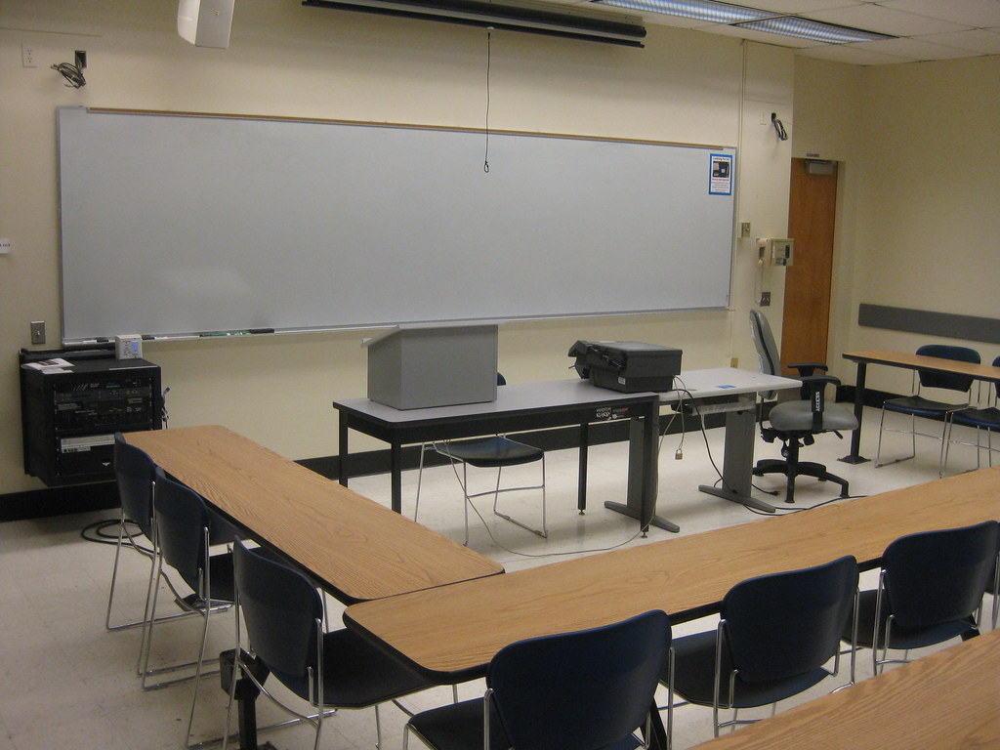

Home
Meet Von
Von's Origins
Abilities
Von, the mute zombie, lives in conditions typical of an undead monster. His crappy studio apartment in Queens is a narrow, dark abode with black-out curtains over the windows and low-light plants, like creeping ivy, growing in every direction to feed and supply the dank, musky atmosphere. The spores that grow naturally in the trough of his decayed inner organs have spread to inhabit his living space; sometimes he uses the mushrooms growing in the corners of his room and under the bed for cooking, a hobby he enjoys. To keep his brain from turning to complete mush, Von pursues a variety of intellectual activities, learning multiple languages including ASL, which comes in handy.
"Orange Pore Fungus (Favolaschia calocera)" by Bernard Spragg is marked with CC0 1.0
Despite the relative comfort sitting inside like a recluse all day provides, Von teaches AP European History at a local high school. Though mute, his assistant teacher, Clarice, helps him communicate with the class, and the inability to speak verbally has proven to be less of an obstacle in educating young minds than one would think. This is often the extent of his day to day socialization, however, as Von makes no effort to spend time with his fellow teachers, nor his neighbors, and has forgone dating entirely. He tells himself he’s happy being alone (well, relatively) though his self-isolation is mostly out of fear that he’ll be rejected should he let anyone find out about the whole “undead monster” thing. Keeping mostly to himself with a strict routine- wake up, grab a coffee, teach, grab another coffee, grade papers, sleep- there are moments when Von is alone that his resident ghost, Frederick, will make himself known. Frederick never gets sick of making off-handed remarks about Von’s life every moment he gets, communicating with the mute by slithering out of his mouth in the form of a wispy white blob. Mostly Frederick likes to torment Von out of spite for, you know, eating him, but neither will admit to the fact that they’re the other’s best- and only- friend.

"San Francisco State University - Classroom" by coolmikeol is licensed under CC BY 2.0